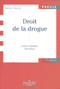

| science |
| home page |
|  |
| Opportunities to become involved in curriculum development research and health policy projects. Symposia on leadership and management skills relevant to academic medicine. Personal growth and exploration through mentoring and self-directed learning activities and completion of a fellowship project. Presentations at national medical education conferences. All fellows must be eligible for licensure in Arizona to participate. |
|
Calculate Your GPA Total courses, credits and grades to get your GPA. Share information and network with other adult students in the forums. Accelerated Learning Programs Earn a bachelor's or MBA with no classroom attendance in two years using Internet-based learning. The Acid Test An older student gets a surprising lesson when she returns to class. Reduce Exam Anxiety Ten steps to reducing anxiety and taking exams with confidence. |